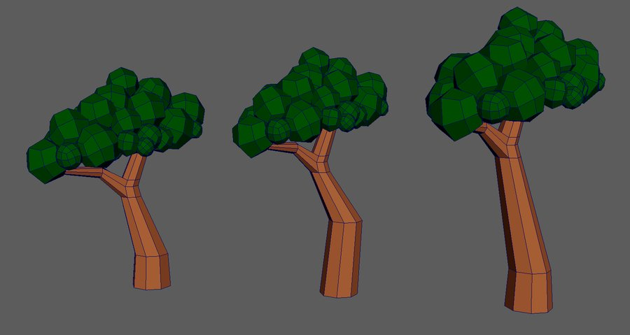
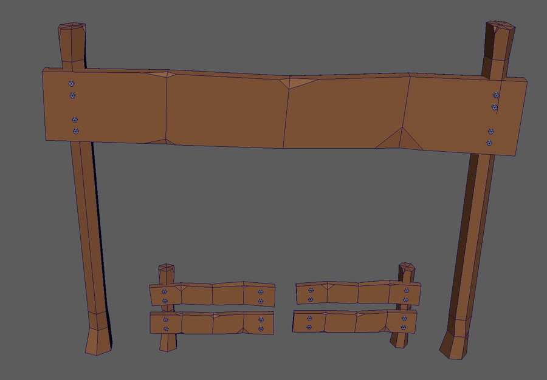
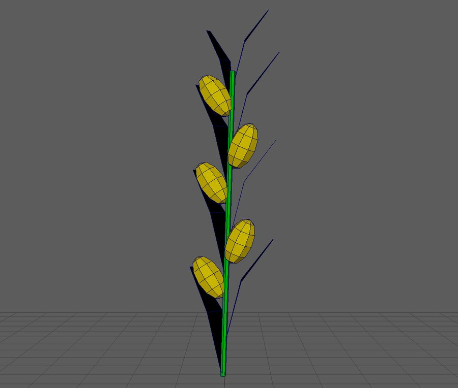
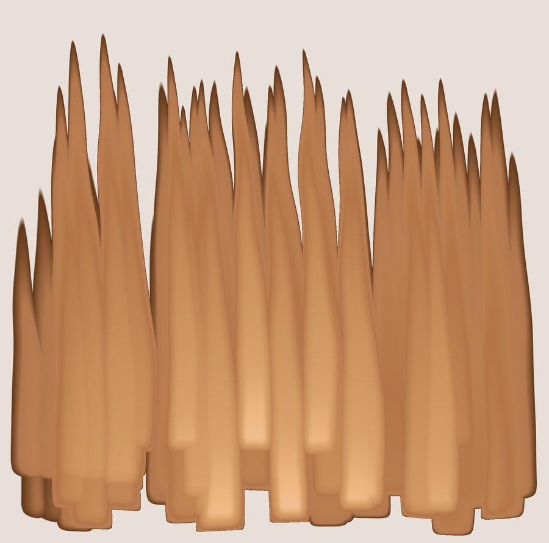
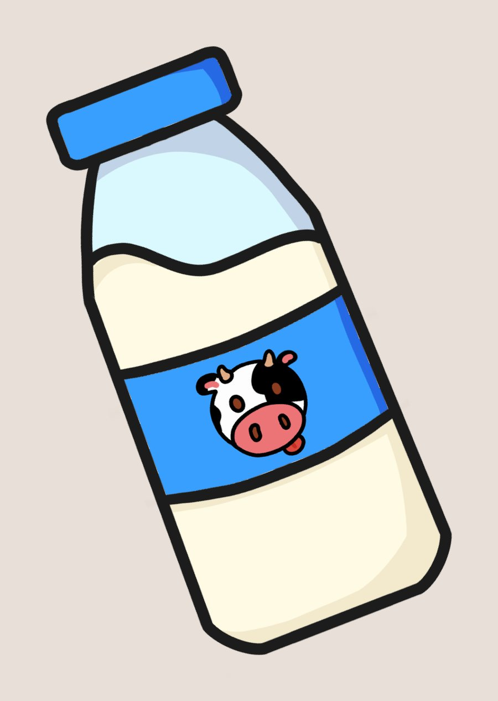
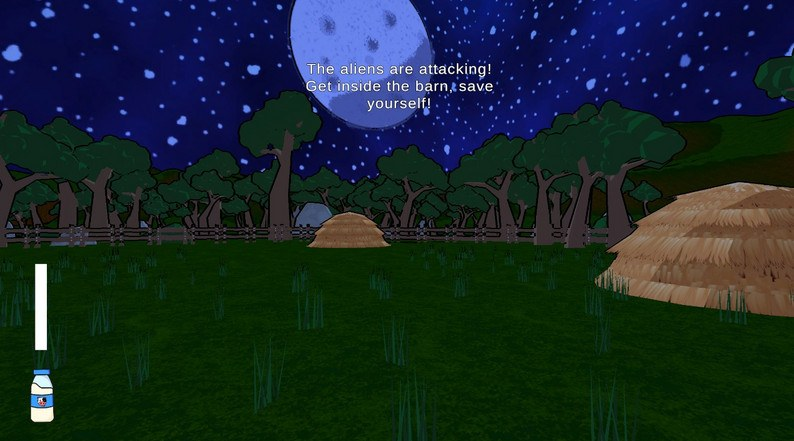
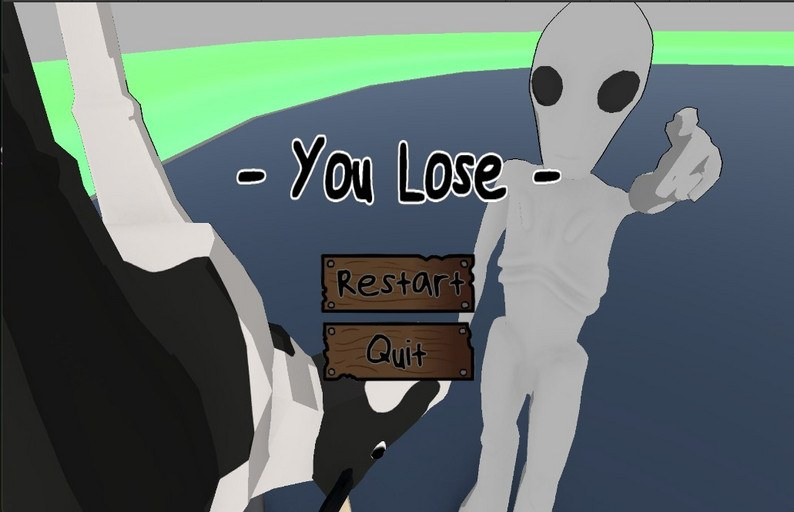

Moo-F-O
A stealth survival game where players avoid a UFO and secure a barn while navigating a farm environment.
- Course
- Game Production
- Role
- Producer, UI designer, environment artist
- Status
- Completed
- Team
- 9 people
- Tools
- Unity (engine), Maya (models), Substance Painter and Designer (textures), Blender (animation), ClickUp (organization)
- Play
- itch.io page
My contributions
- Designed and implemented UI systems: main menu, pause, and win/lose screens.
- Created environment assets: trees, fencing, corn, and props, plus grass, dirt, and hay textures.
- Coordinated team tasks and tracked production progress.
- Assisted with gameplay implementation and integration in Unity.
Process
- Designed UI with a focus on clarity and quick player understanding.
- Iterated on environment layout to improve navigation and readability.
- Collaborated with team members to ensure consistency across systems.
Environment assets





[Early layout next to the improved layout]
UI screens




Challenges
One challenge was making interactable elements clearly visible to players. This was improved by adjusting scale, placement, and visual contrast within the environment.
Result
[Gameplay video link]
What I learned
[Takeaways you would apply next time.]